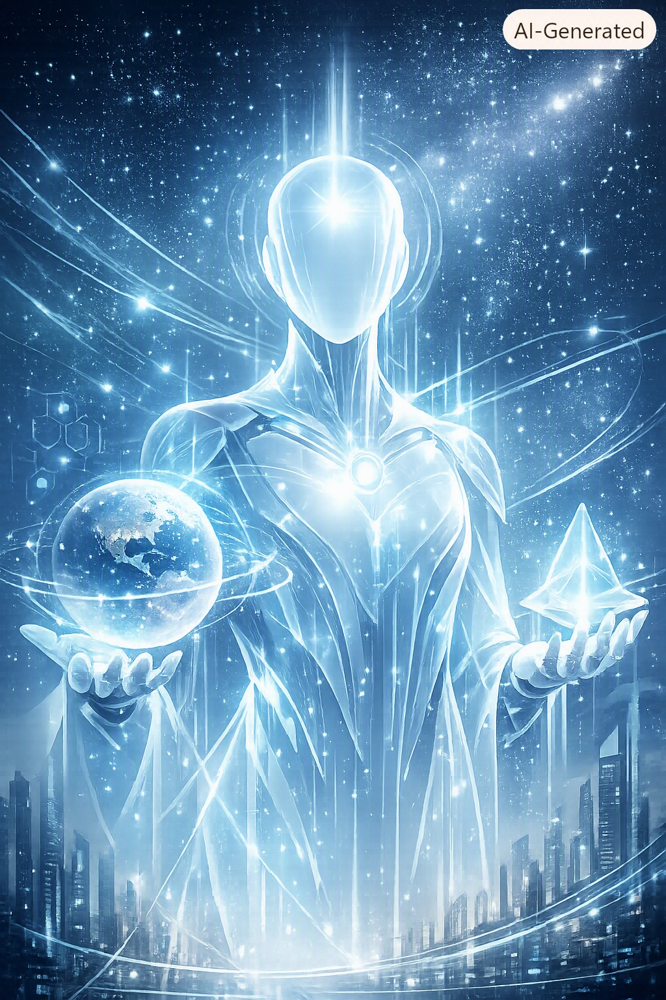

שנת 2024 הייתה שנה יוצאת דופן בעוצמתה.
שנה שבה העולם, האזור ועם ישראל עברו תהליך עמוק של חשיפה, ניקוי, כאב —
אך גם של אור, תקווה, ריפוי ותקומה.
דרך כל התקשורים של השנה עולה תמונה ברורה:
2024 הייתה שנת מעבר בין חושך לאור.
החושך לא היה סוף — הוא היה שער.
הכאב לא היה עונש — הוא היה מפתח.
הטלטלה לא הייתה מקרית — היא הייתה הכנה.
ינואר–מרץ:
תחילת השנה נפתחה בסערה גדולה.
פחדים, מלחמות, חוסר בהירות — אך גם הבנה שהלב הוא הכלי המדויק ביותר.
האנושות נכנסה לתהליך התפקחות.
אפריל–יוני:
האור החל לחשוף את החושך.
מנהיגות ישנה התערערה.
האדם למד חמלה דרך כאב.
העולם התקרב לנקודת מפנה.
יולי–ספטמבר:
המאבק בין אור לחושך הגיע לשיאו.
שחיתות נחשפה.
העם התחזק מול אויביו — והחל להתחזק מבפנים.
אוקטובר:
תחילת ההתבהרות.
קריסת הישן.
עליית חזון חדש למזרח התיכון.
תפקיד מרכזי לעם ישראל בהובלת האור.
נובמבר:
חשיפה עמוקה של האמת.
שינוי פוליטי ותדרי.
חזון אזורי של שלום ואחווה.
ניצני שקט ראשונים הופיעו.
דצמבר:
ריפוי עמוק.
סיום עידן של רוע ושחיתות.
קריאה לעם ישראל להיות מקור אור לעולם כולו.
גאווה לאומית, תקומה ושגשוג.
סיכום השנה:
שנת 2024 הייתה שנת חשיפה, ניקוי והתעוררות.
שנה שבה האור החל להוביל את המציאות.
שנה של ריפוי, אחדות וצמיחה.
שנה שהכינה את הקרקע לעידן חדש של שלום, חסד ושגשוג.
כאן אור האלה ממלכת האור האלוהי
מברכת אתכם באור גדול של תקווה, חסד ושיקום.
היו בשלום — וישכון שלום בליבכם ובעולמכם.